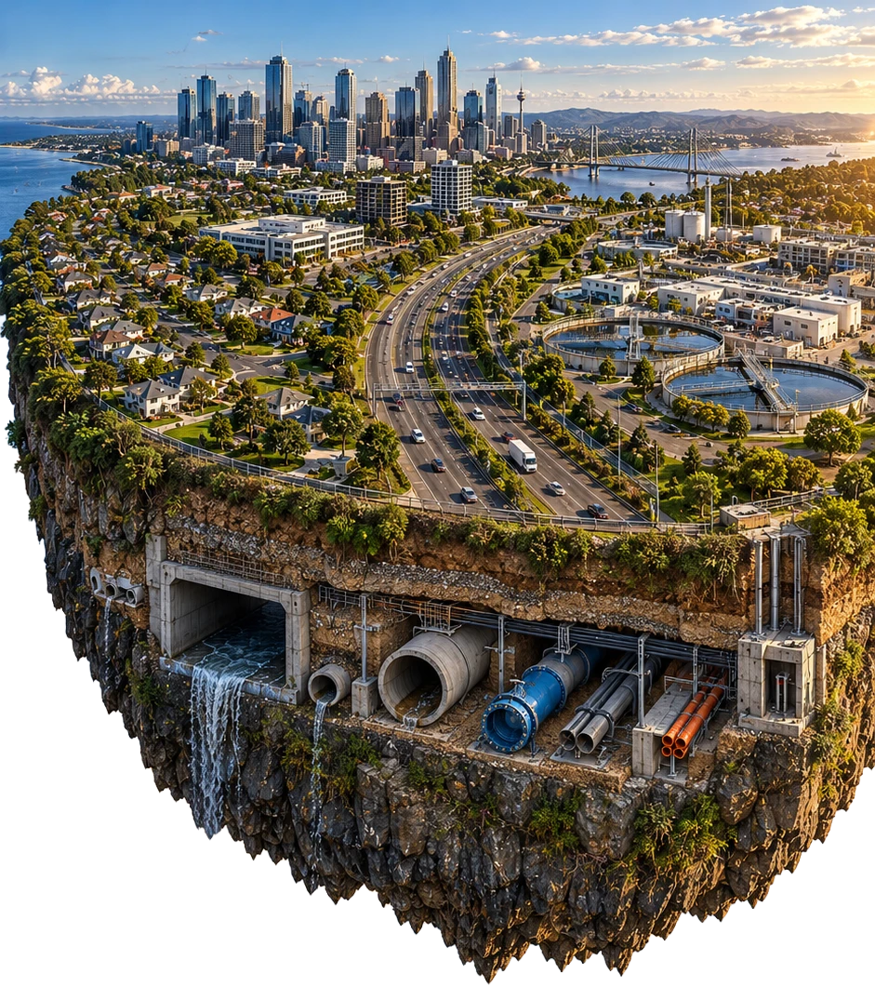

We fix pipes
0

Pick an industry on the island and descend through the clouds to see how Nuflow fixes it. No digging, no disruption.
From family homes to mines, councils to high-rises, Nuflow relines, repairs and protects pipe networks in place. Our engineered liner and resin systems cure a structural new pipe inside the old one, with a 50-year design life and minimal disruption during installation. Our trained local network covers 58+ locations across Australia, New Zealand and Asia.
When pipes in a home, apartment complex or strata-managed property fail through cracks, leaks, corrosion or tree-root intrusion, the instinct is to replace them, digging through floors, gardens, driveways and walls. Nuflow offers a smarter way. Using existing access points, a resin liner is installed and cured in place to form a seamless new pipe inside the old one: no digging, minimal disruption to residents, and a structural repair backed by a product warranty of up to 50 years.
Seal cracks and joints and block root intrusion from the inside, restoring flow without digging up driveways, gardens or living areas.
Repair cracked or leaking stormwater lines to stop pooling, erosion and water ingress, without lifting landscaping or paving.
Seal leaks and restore pressure without touching the pool shell, deck or tiles, no excavation and no draining.
Restore vertical drainage stacks in apartment buildings via existing access points, without opening walls or disturbing units.
Reline ageing potable lines with certified, food-grade systems to stop leaks and protect water quality, no demolition.
Restore the internal flow and integrity of fire services without removing ceilings or opening walls, keeping the system compliant.
For commercial buildings and industrial facilities (high-rises, shopping centres, schools, hospitals, food and power plants), downtime isn't an option. Nuflow's trenchless relining restores ageing or damaged pipework without tearing up floors, walls or outdoor areas, so tenants stay in place and operations keep running. A resin liner cured inside the existing pipe forms a durable new pipe resistant to corrosion, chemicals and pressure variation, completed faster and at lower cost than full replacement.
Restore corroded or blocked stacks in multi-storey buildings internally, no wall demolition, minimal impact on occupants.
Reline against root intrusion, corrosion and misaligned joints to stop blockages and odours without disrupting tenants.
Seal cracks and restore flow without cutting through paved areas, gardens or operational zones.
Seal and reinforce pits and traps internally to prevent odours, leaks and failures, no excavation or facility downtime.
Reline ageing water lines with certified systems to stop leaks, lift pressure and protect water quality.
Restore the pressure and integrity of fire mains and services without removing ceilings or opening walls.
Protect and reline HVAC and cooling lines in place, extending service life with minimal interruption to operations.
Internally seal conduit against moisture ingress and corrosion to protect cabling and maintain compliance, without invasive replacement.
Cured-in-place pipe (CIPP) relining is a proven, cost-effective method for rehabilitating ageing council and civil assets, particularly sewer, stormwater and water-main networks. A seamless, jointless, corrosion-resistant liner is installed within the existing pipe with minimal excavation, restoring structural integrity and flow while reducing labour, plant and reinstatement costs. For councils, engineers and civil contractors, it extends asset life and limits disruption to roads, services and communities.
Seal cracks and displaced joints and prevent root entry, restoring flow capacity and extending the life of critical wastewater infrastructure.
Restore integrity where corrosion, joint failure or soil erosion risk sinkholes and flooding, without excavating roads or verges.
Install a pressure-rated lining within the existing main to restore strength and flow, prevent leaks and preserve water quality.
Reinforce against pressure surges, joint separation and internal wear where ground access is difficult or limited.
Seal and reinforce internally against hydrogen-sulphide corrosion and infiltration, creating a gas-tight barrier without demolition.
Structurally reline pipes under roads, rail and buildings to carry surface loads and restore shape where excavation is impractical.
Chemical- and heat-resistant liners restore containment for aggressive industrial effluent and maintain compliance.
Epoxy coatings or structural relining restore flow and pressure integrity to maintain compliance and public safety.
Mining and industrial pipe networks operate in some of the harshest environments. Abrasive slurries, corrosive chemicals, elevated temperatures, high pressures and constant loading all accelerate failure, and an outage is measured in lost production, environmental risk and safety exposure. Nuflow rehabilitates these assets from the inside using engineered composite liners and specialist resin systems: structural repair or protective lining installed in situ, without excavation, hot works or major shutdowns, so operations continue.
Rebuild abrasion- and erosion-worn lines between pits, plants and tailings facilities where wall loss leads to leaks or failure.
Reline acid, alkali and reagent lines, often small-bore and running through confined corridors, where failure is high-risk.
Chemical- and heat-resistant liners restore aggressive effluent lines beneath slabs and treatment areas with limited access.
Reline and protect compressed-air lines against internal corrosion and condensate damage, maintaining pressure and reliability.
Reinforce pressurised rising mains against surges, joint separation and internal wear where access is limited.
Protect and reline steel cooling and utility lines in place, extending service life in high-wear plant environments.
View any document online or download it to keep. Filter by sector to see what applies to your assets.